Coffee & Viz
Serious Gaming with Tangible Landscape
Brendan Harmon, Anna Petrasova, & Vaclav Petras

Scientific modeling is powerful, but hard to do
Developing games with
Tangible Landscape
A tangible user interface powered by open source GIS
Coupling a digital and physical model of a landscape
Physically manifesting digital data so that you can intuitively feel and shape it with your hands


Near real-time interaction
How-it-works

Cycle

Intuitive scientific modeling with Tangible Landscape

Intuitive scientific modeling with Tangible Landscape


Intuitive scientific modeling with Tangible Landscape
Serious gaming with Tangible Landscape

Coffee & Viz:
Collaborative Management of Invasive Species
Using Tangible Landscape
Center for Geospatial Analytics
Francesco Tonini
Global Change Biology
Human activities are increasingly altering natural environments
- Urban expansion
- Agriculture
- Species Introduction

Global Change Biology (cont.)
Increased human mobility and expanded global trades
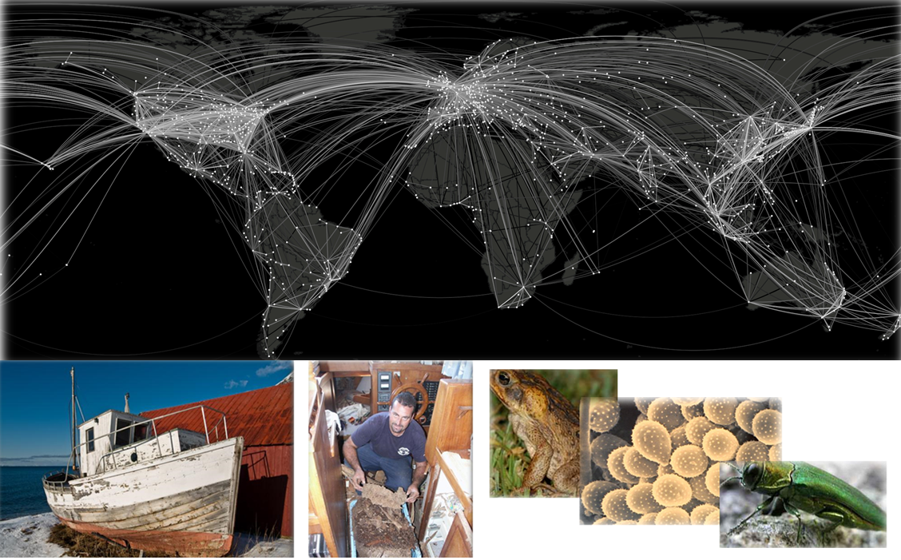
Invasive Plant Pathogens
Plant diseases have socio-economic impacts
- Timber management
- Wildfire risks and human safety
- World food staples and cash crops
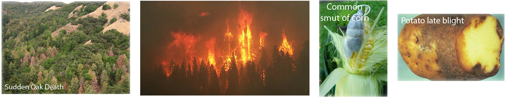
Invasive Plant Pathogens (cont.)
Plant diseases have ecological impacts
- Primary productivity
- Nutrient cycling
- Wildlife habitat
- Aesthetic and recreational value
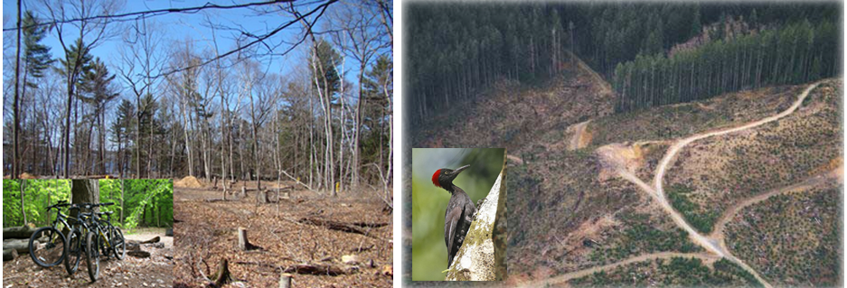
Invasive Insects
High costs associated with treatment and control
- Emerald Ash Borer: 10+ billion cost for tree removal & replacement
- Invasive termites in the U.S.: ≈ $750 mi property damage
- In U.S. each year control cost for termites alone $1.5+ billion
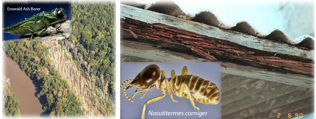
Key Management Issues
- Late identification: time to action counts!
- Deployment of funding
- What do we manage for?
- What type of treatments are effective?
- Allocation of management areas
Key Management Issues (cont.)
The development of timely and effective management strategies is often hampered by:
- Complexity of systems dynamics
- Presence of multiple jurisdictional overlays & stakeholders
- Often inadequate involvement of stakeholders
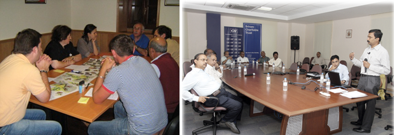
Collaborative Management Using Tangible Landscape
Co-learning and collaboration: improve the efficacy of simulated management interventions
- Quickly and intuitively learn dynamics of complex spread models
- Stakeholders virtually placed into the landscape
- Quickly develop & test management strategies
- Receive near-real time feedback
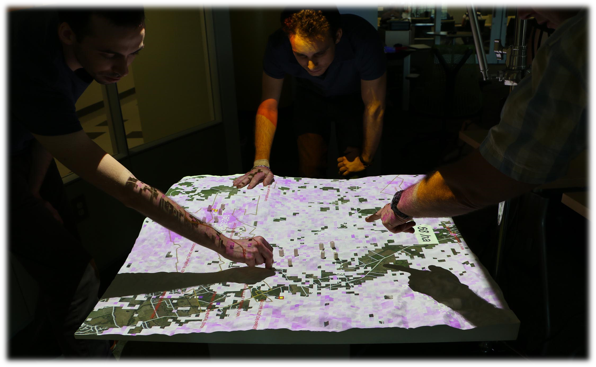
Treatments Allocation
(in the field)
Localized treatments of infested areas (e.g. fumigation, host removal, chemical treatments)
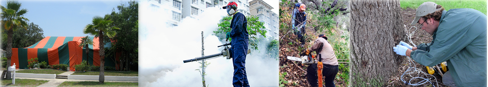Treatments Allocation
(on Tangible Landscape)
Delineation of eradication/control areas directly on Tangible Landscape

Termite infestation game
Setting
This game is set in Dania Beach, Florida, a neighborhood at risk of invasion by termites.
Objective
Try to save as many city blocks as possible from infestation with preventative treatment given a limited budget.
Instructions
- Players have a limited treatment budget (10 blocks)
- At the beginning of each round players will see a map of the city and a map of termite habitat
- Then players may place treatment blocks on the game board in order to protect against termites
- The game master runs the termite spread simulation and shows the results
- At the end of each round players will see the animated spread of termites, the budget spent, and the number of city blocks infested
- For new players the game master randomizes the starting locations of the initial termite colonies
Example
No management VS localized treatments
Example
...
Example
...
Modeling Coastal Dynamics
Center for Geospatial Analytics
Helena Mitasova, Anna Petrasova, Vaclav Petras, Brendan Harmon
North Carolina Coast: Dynamic Landscape
- Sandy barrier islands are continuously shaped by ocean and wind
- Storms and hurricanes bring shore erosion, flooding, inlets opening and filling
- Lidar mapping since 1996 captures 3D dynamics, identifies vulnerable locations
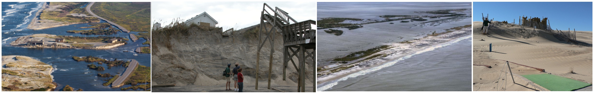
Landscape shaped by wind: Jockey's Ridge sand dunes
- Active migrating dune system within fixed state park boundaries
- Migrated at 6 meters per year
- Lost half of its height and split into multiple smaller ridges
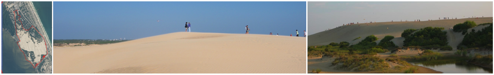
Jockey's Ridge migration 1974 - 2008


Landscape shaped by ocean waves and currents: Cape Fear
Capes and inlets are the most dynamic landforms: Bald Head island shoreline evolution and Cape Fear dynamics
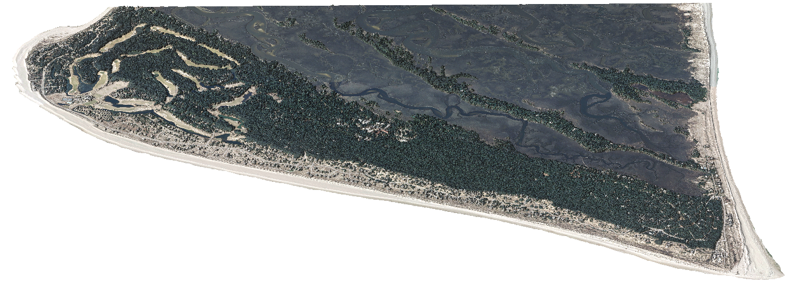 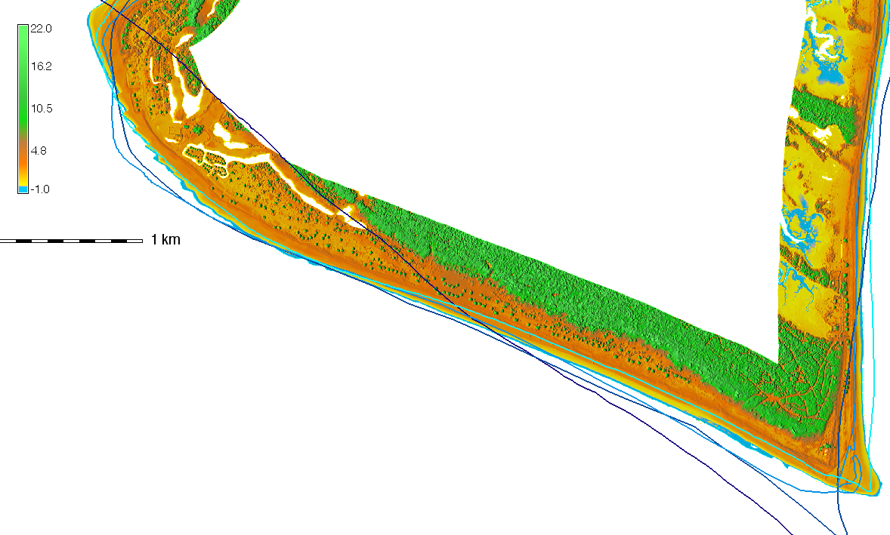 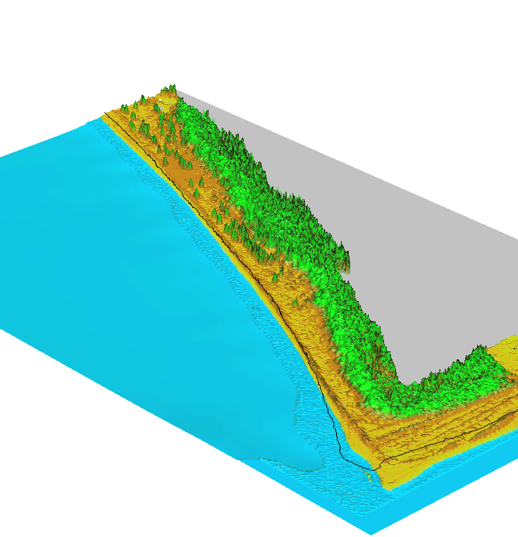
Static structures in dynamic landscape are vulnerable
Coastal erosion moves shoreline and degrades dunes making homes vulnerable to flooding
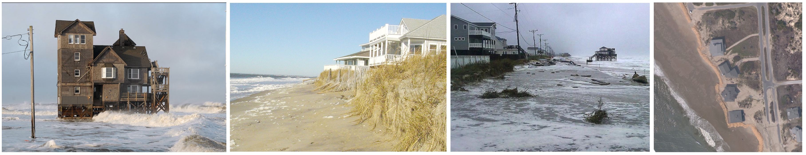
Storm surge flooding
Foredunes protect homes and infrastructure from flooding during storms, their degradation increases vulnerability
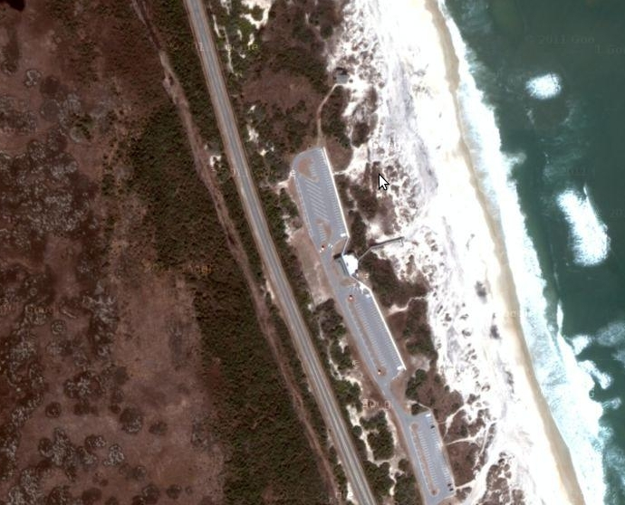

Modeling spatial extent of flooding
Reconstruction of flooding extent during the peak of hurricane Irene in 2011: Pea Island breach and Rodanthe
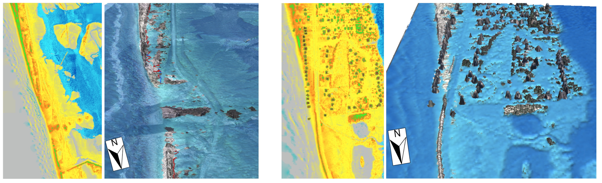 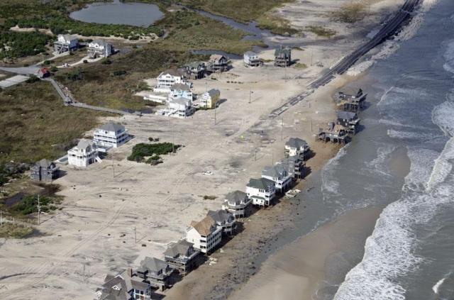
Simulation of extreme storm surge flooding: Cape Fear
Flooding extent simulation at Cape Fear area
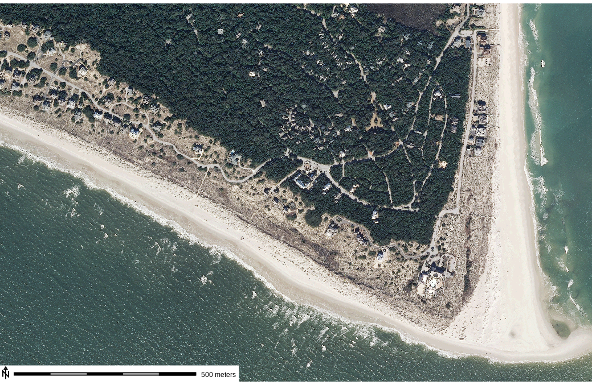 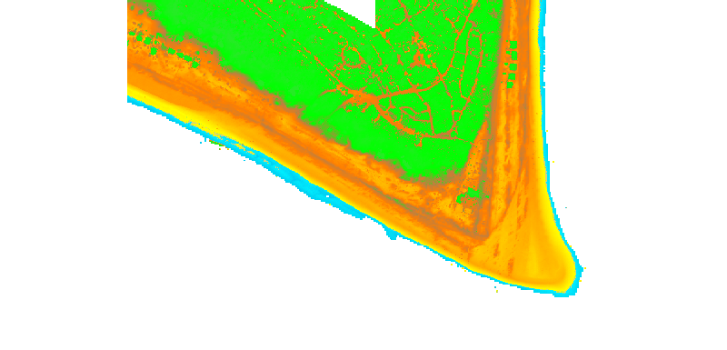
Interactive Bald Head Island
Unique community striving for sustainable development: exploring the landscape in the Hunt library Teaching and Visualization laboratory
Tangible Landscape game coastal inundation
RULES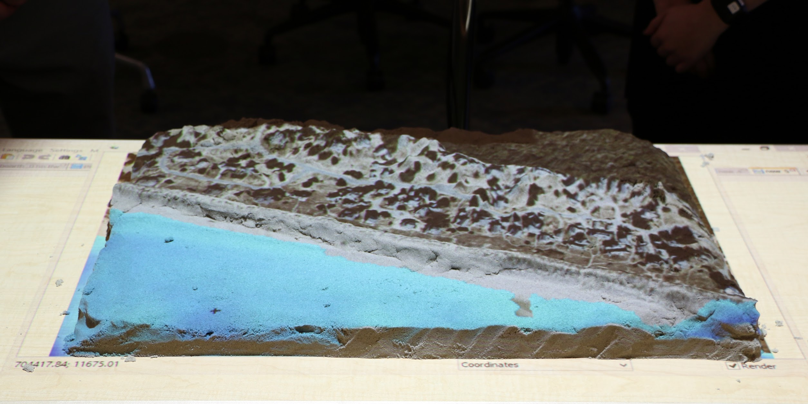 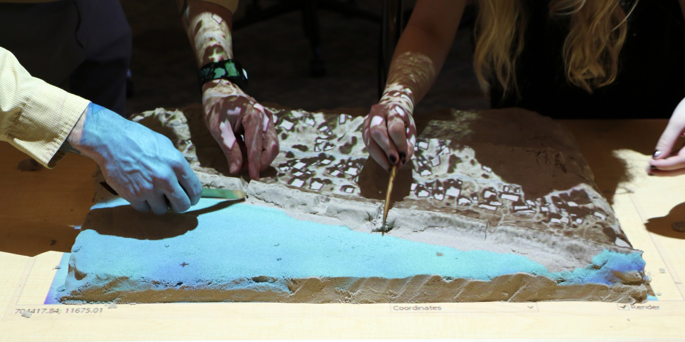 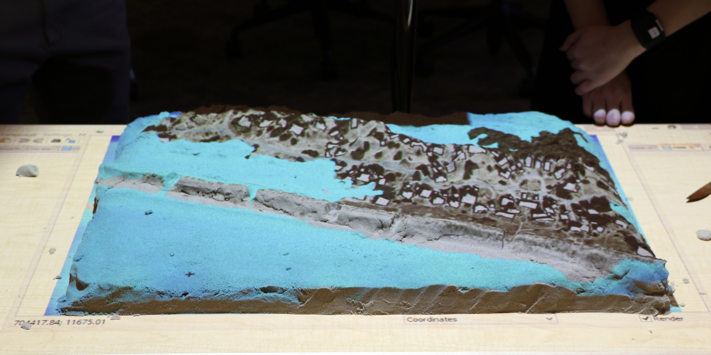